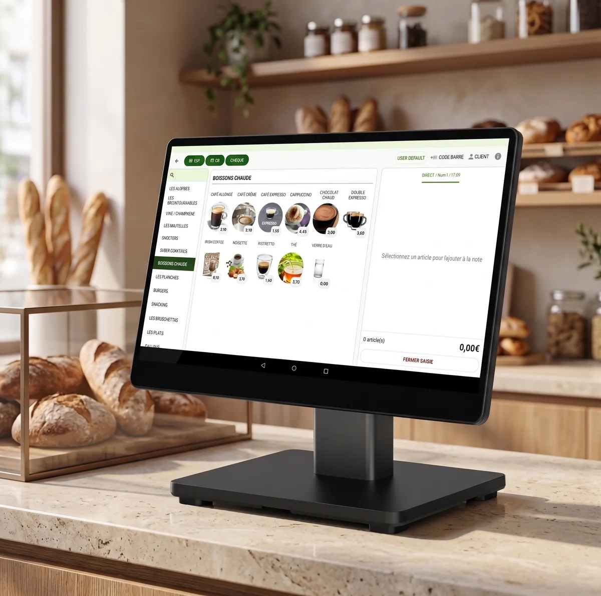

Si vous vendez à des particuliers et que vous encaissez avec un logiciel de caisse, vous avez sûrement entendu parler de la NF525. Peut-être même qu'un commercial vous a mis la pression l'an dernier : « certifiez-vous avant le 31 août 2026, sinon ». Ce commercial n'avait pas tort à l'époque. Il a tort aujourd'hui.
En février 2026, l'administration a rebattu les cartes. La certification par un organisme accrédité n'est plus le seul chemin légal. L'attestation de l'éditeur de votre logiciel, qu'on avait supprimée un an plus tôt, est de retour. Résultat : moins de pression, mais aussi plus de confusion. La moitié des pages que vous trouverez encore en ligne décrivent l'état d'avant, périmé.
On installe des caisses tous les jours chez des commerçants de Mâcon, Chalon ou Villefranche. On a vu la panique de 2025, la course aux certificats, les organismes saturés. Alors voici l'état du droit au 6 juillet 2026, sans jargon et sans vendeur de peur.
La norme NF525 est un référentiel de certification qui atteste qu'un logiciel de caisse respecte les quatre critères ISCA (inaltérabilité, sécurisation, conservation, archivage) exigés par l'article 286 du Code général des impôts. Depuis février 2026, ce n'est plus l'unique preuve de conformité admise : l'attestation de l'éditeur du logiciel est aussi acceptée.
L'État a fait marche arrière : la certification NF525 n'est plus obligatoire
Commençons par le fait qui compte, parce que c'est celui que presque personne n'a à jour.
Depuis le 21 février 2026, deux preuves de conformité sont de nouveau acceptées, au choix : le certificat d'un organisme accrédité (la fameuse NF525, délivrée par un organisme comme l'AFNOR, ou la certification LNE), OU l'attestation individuelle établie par l'éditeur de votre logiciel.
Pour comprendre pourquoi c'est une « marche arrière », il faut le petit historique. Il tient en trois dates.
Avant 2025, ces deux preuves existaient déjà, au choix. Vous pouviez présenter un certificat, ou une attestation de votre éditeur. Simple.
La loi de finances 2025 (article 43, en vigueur le 16 février 2025) a supprimé l'attestation de l'éditeur. Du jour au lendemain, le certificat d'un organisme accrédité devenait la seule preuve admise. Le délai pour l'obtenir avait été repoussé au 31 août 2026. C'est cette version qui a déclenché la course à la certification et engorgé les organismes. C'est aussi cette version qui traîne encore partout sur le web, y compris dans de vieux articles et d'anciennes pages officielles.
La loi de finances 2026 (article 125, applicable dès le 21 février 2026) a rétabli l'attestation de l'éditeur. On revient donc au système du choix : certificat OU attestation.
lightbulbLe point clé
Au 6 juillet 2026, personne ne peut vous obliger à détenir une certification NF525. C'est faux. Vous avez le choix de la preuve. Ce qui reste obligatoire, ce n'est pas le label, c'est la conformité du logiciel lui-même. Nuance capitale, on y vient.
Ce que la loi exige vraiment (et ne change pas depuis 2018)
Toute cette agitation portait sur la preuve. L'obligation de fond, elle, n'a pas bougé d'un iota depuis le 1er janvier 2018.
L'article 286 du CGI, en clair
L'article 286-I-3° bis du Code général des impôts dit, en substance : si vous êtes assujetti à la TVA, que vous vendez à des clients particuliers, et que vous enregistrez leurs règlements avec un logiciel ou système de caisse, ce logiciel doit répondre à quatre exigences techniques.
L'obligation porte sur le comportement du logiciel, pas sur un tampon commercial précis. C'est pour ça qu'un logiciel peut être parfaitement conforme sans porter le sigle NF525 : ce qui compte, c'est qu'il coche les quatre cases ci-dessous, et que vous puissiez le prouver.
Les quatre critères ISCA, sans le jargon
Les textes parlent des conditions « ISCA ». Derrière l'acronyme, quatre idées de bon sens, celles qui empêchent de trafiquer ses ventes après coup :
Inaltérabilité
Une fois une vente enregistrée, on ne peut plus la modifier en douce. Les données de règlement sont figées.
Sécurisation
Toute correction ultérieure laisse une trace. Si on modifie quelque chose, le logiciel garde la mémoire de l'original et du changement.
Conservation
Le logiciel calcule et enregistre les totaux de clôture : journalière, mensuelle, annuelle. Vos cumuls sont bouclés et gardés.
Archivage
Les données sont archivées à une périodicité que vous choisissez, au maximum une fois par an ou par exercice.
En clair : le fisc veut être sûr qu'une caisse ne peut pas « oublier » des tickets pour faire baisser le chiffre déclaré. C'est tout l'esprit de la loi anti-fraude à la TVA.
Qui est concerné, qui ne l'est pas
La règle vise les assujettis à la TVA qui vendent à des particuliers (du B2C) et qui enregistrent ces règlements via un logiciel ou système de caisse. Un boulanger, un restaurateur, un coiffeur, un commerce de détail : concernés, sans discussion.
Deux cas d'exonération sont écrits noir sur blanc dans les textes :
- Les assujettis qui bénéficient de la franchise en base de TVA.
- Les automates qui n'acceptent que la carte bancaire ou le virement via un établissement bancaire.
Reste une zone plus grise, qu'il faut manier avec prudence. La loi vise ceux qui vendent à des particuliers avec un logiciel de caisse. On peut en déduire que si vous ne facturez qu'à des professionnels, ou que vous n'utilisez tout bonnement pas de logiciel de caisse, cette obligation précise ne vous concerne pas. Mais « on peut en déduire » n'est pas « la loi le dit expressément ». Si votre activité est mixte, ou que votre cas ne rentre dans aucune case nette, ne tranchez pas au doigt mouillé : posez la question à votre expert-comptable ou à votre installateur. C'est cinq minutes de téléphone contre une amende par caisse.
Certificat NF525 ou attestation de l'éditeur : deux preuves, une différence de solidité
Depuis février 2026, vous avez le choix entre deux justificatifs. Ils sont légalement équivalents. Ils ne se valent pas tout à fait en pratique.
Le certificat d'un organisme accrédité
C'est la certification NF525, délivrée par un organisme accrédité (l'AFNOR par exemple), ou la certification LNE. Un tiers indépendant a audité le logiciel et atteste qu'il respecte les quatre critères ISCA.
Son intérêt : la preuve est externe, incontestable, et elle ne dépend pas de la bonne foi de l'éditeur. Le jour d'un contrôle, vous présentez le certificat, le contrôleur n'a rien à redire. C'est la voie la plus lisible.
L'attestation individuelle de l'éditeur
C'est l'éditeur de votre logiciel qui atteste lui-même que son produit est conforme, selon un modèle fixé par l'administration fiscale et portant sur les mêmes exigences ISCA.
Son intérêt : c'est plus léger, plus rapide, ça n'implique pas de passer par un organisme. Sa limite : la preuve repose sur la déclaration de l'éditeur, pas sur un audit indépendant. Parfaitement légale, mais un cran moins solide qu'un certificat le jour où un contrôleur creuse.
Dans les deux cas, une règle ne change pas : le justificatif doit exister pour chaque logiciel ou système de caisse, et vous devez pouvoir le présenter immédiatement. Pas « le retrouver chez l'éditeur la semaine prochaine ». Tout de suite.
Ce que vous risquez lors d'un contrôle
Là, pas de zone grise. L'administration peut débarquer sans prévenir dans vos locaux pour vérifier que vous détenez, pour chaque caisse, votre certificat ou votre attestation. C'est un contrôle inopiné : pas de rendez-vous, pas de préavis.
Et c'est à vous de prouver que vous êtes en règle, pas à l'inspecteur de prouver que vous ne l'êtes pas. Vous devez sortir le justificatif sur-le-champ.
Si vous ne pouvez pas : 7 500 € d'amende par caisse non conforme en cas de contrôle fiscal. Par caisse. Deux points de vente, deux caisses, c'est potentiellement 15 000 €. Vous avez ensuite 60 jours pour vous mettre en conformité ; passé ce délai sans régularisation, une nouvelle amende de 7 500 € peut tomber.
C'est précisément ce risque, immédiat et chiffré, qui explique pourquoi le choix de la preuve n'est pas anodin. Une attestation d'éditeur introuvable le jour J vous coûte aussi cher qu'une absence totale de preuve.
Notre position, en tant qu'installateur de caisses
On va être clairs, parce que le sujet se prête aux vendeurs de peur et qu'on n'en est pas.
Non, la certification NF525 n'est plus obligatoire. Depuis février 2026, l'attestation de votre éditeur suffit légalement. Quiconque vous dit encore « il faut vous certifier avant le 31 août, c'est la loi » vous vend un état du droit périmé.
Mais quand on a le choix entre une preuve qu'un contrôleur ne peut pas contester et une preuve un peu plus fragile, pour un risque de 7 500 € par caisse, le calcul est vite fait. Le certificat d'un organisme accrédité reste la position la plus tranquille.
C'est pour ça qu'on installe CashMag, un logiciel certifié NF525 par l'AFNOR : l'attestation est accessible à tout moment depuis votre caisse. Le jour d'un contrôle inopiné, vous ne cherchez pas, vous ne rappelez personne. Vous ouvrez votre caisse, le justificatif est là.
Notre rôle ne s'arrête pas au sigle. On vient sur place, on configure la caisse pour votre activité, et on s'assure que vous savez où trouver votre justificatif si le fisc frappe à la porte. Un boulanger de Mâcon n'a pas à devenir juriste fiscal pour dormir tranquille : c'est tout l'objet d'une caisse configurée pour votre boulangerie.
Si vous cherchez simplement une caisse déjà en règle, installée et configurée, voyez notre offre de caisse enregistreuse conforme. Nous intervenons directement pour l'installation de caisse en Saône-et-Loire, sur Mâcon, Chalon et les communes alentour.
Questions fréquentes
Qu'est-ce que la norme NF525 ?
La certification NF525 est-elle obligatoire en 2026 ?
Que veut dire ISCA ?
Je vends surtout à des professionnels. Suis-je concerné ?
Combien risque-t-on en cas de contrôle ?
CashMag est-il conforme ?
Sources
- economie.gouv.fr, « Ce qu'il faut savoir sur la certification des logiciels de caisse ».
- Service Public Entreprendre, actualité A18087 (rétablissement de l'auto-certification par l'éditeur).
- BOFiP, ACTU-2025-00160 (prorogation du délai au 31 août 2026) et BOI-TVA-DECLA-30-10-30 (obligation, critères ISCA, exonérations, contrôle).
- LégiFiscal, article sur le rétablissement de l'auto-certification (loi de finances 2026).
economie.gouv.fr, service-public.gouv.fr et le BOFiP sont des sources officielles ; LégiFiscal en est une reprise et vulgarisation.